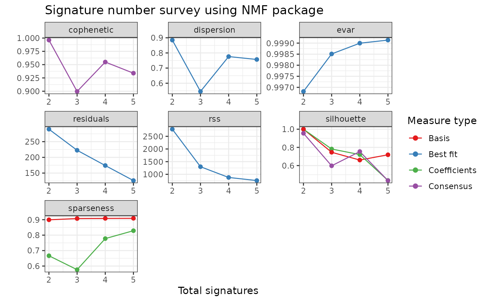
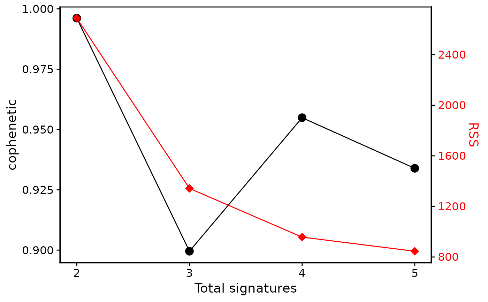
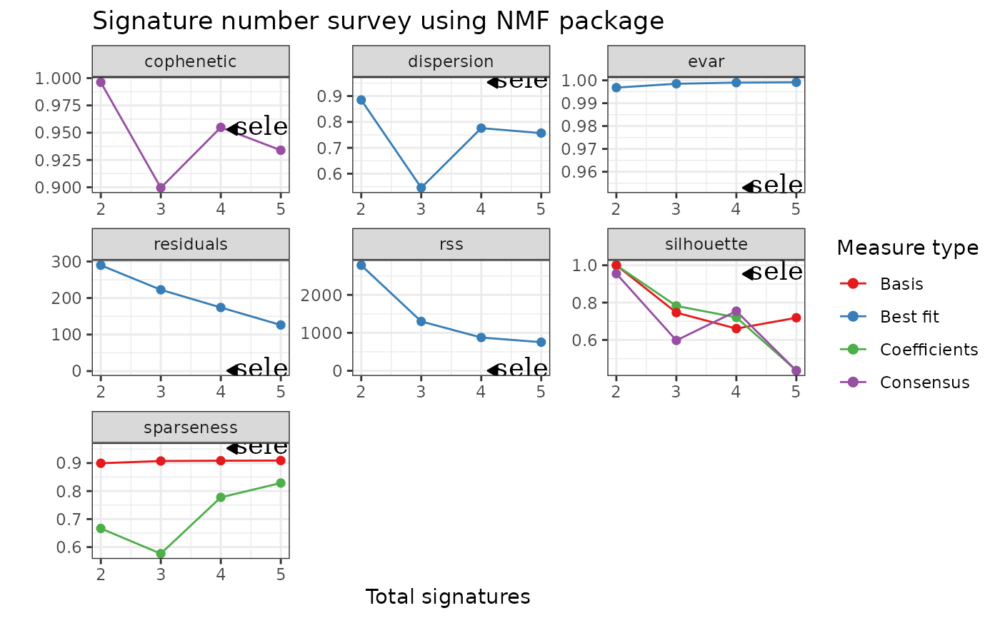
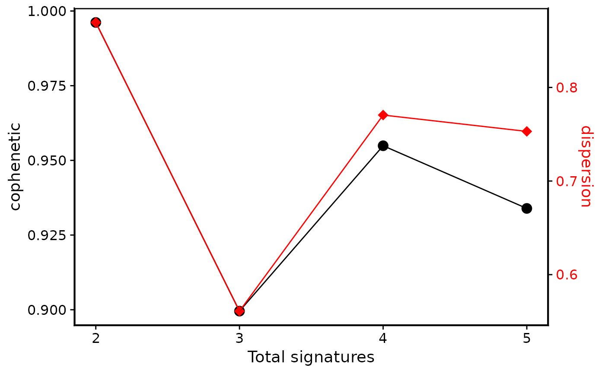
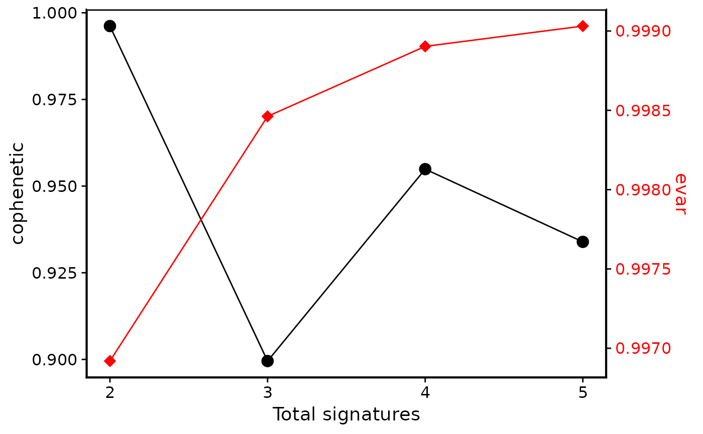
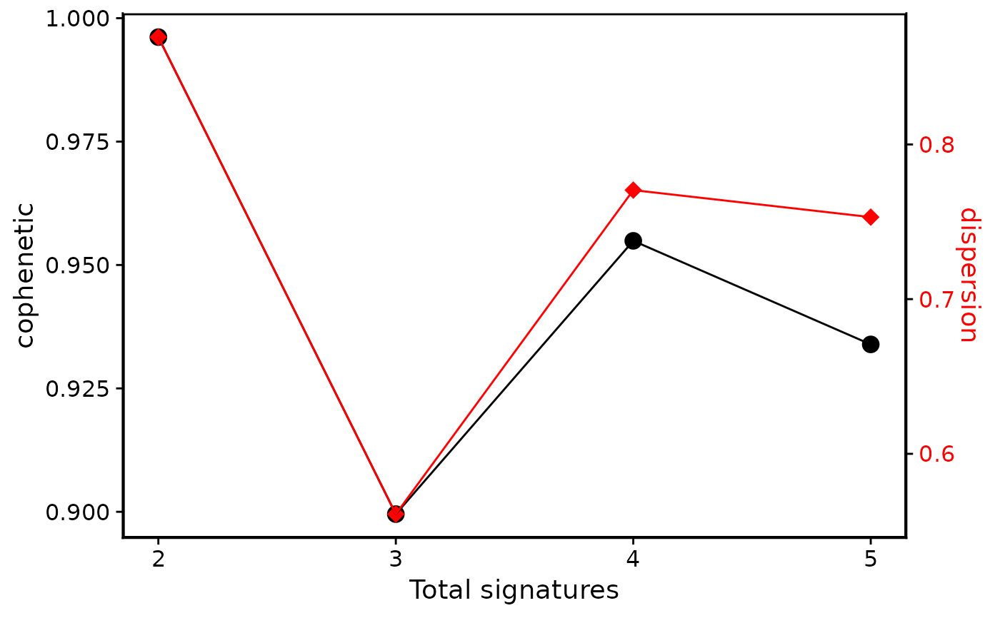
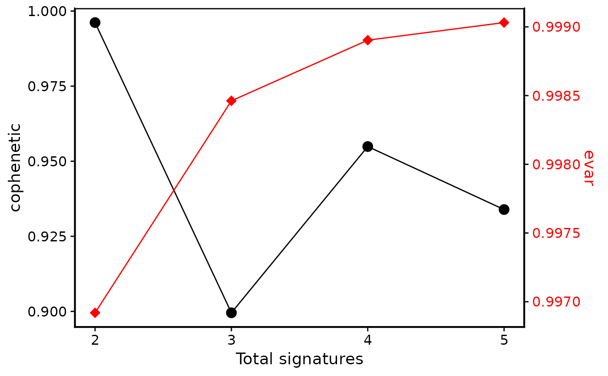

Use NMF package to evaluate the optimal number of signatures.
This is used along with sig_extract.
Users should library(NMF) firstly. If NMF objects are returned,
the result can be further visualized by NMF plot methods like
NMF::consensusmap() and NMF::basismap().
sig_estimate() shows comprehensive rank survey generated by
NMF package, sometimes
it is hard to consider all measures. show_sig_number_survey() provides a
one or two y-axis visualization method to help users determine
the optimal signature number (showing both
stability ("cophenetic") and error (RSS) at default).
Users can also set custom measures to show.
show_sig_number_survey2() is modified from NMF package to
better help users to explore survey of signature number.
sig_estimate(
nmf_matrix,
range = 2:5,
nrun = 10,
use_random = FALSE,
method = "brunet",
seed = 123456,
cores = 1,
keep_nmfObj = FALSE,
save_plots = FALSE,
plot_basename = file.path(tempdir(), "nmf"),
what = "all",
verbose = FALSE
)
show_sig_number_survey(
object,
x = "rank",
left_y = "cophenetic",
right_y = "rss",
left_name = left_y,
right_name = toupper(right_y),
left_color = "black",
right_color = "red",
left_shape = 16,
right_shape = 18,
shape_size = 4,
highlight = NULL
)
show_sig_number_survey2(
x,
y = NULL,
what = c("all", "cophenetic", "rss", "residuals", "dispersion", "evar", "sparseness",
"sparseness.basis", "sparseness.coef", "silhouette", "silhouette.coef",
"silhouette.basis", "silhouette.consensus"),
na.rm = FALSE,
xlab = "Total signatures",
ylab = "",
main = "Signature number survey using NMF package"
)Arguments
- nmf_matrix
a
matrixused for NMF decomposition with rows indicate samples and columns indicate components.- range
a
numericvector containing the ranks of factorization to try. Note that duplicates are removed and values are sorted in increasing order. The results are notably returned in this order.- nrun
a
numericgiving the number of run to perform for each value inrange,nrunset to 30~50 is enough to achieve robust result.- use_random
Should generate random data from input to test measurements. Default is
TRUE.- method
specification of the NMF algorithm. Use 'brunet' as default. Available methods for NMF decompositions are 'brunet', 'lee', 'ls-nmf', 'nsNMF', 'offset'.
- seed
specification of the starting point or seeding method, which will compute a starting point, usually using data from the target matrix in order to provide a good guess.
- cores
number of cpu cores to run NMF.
- keep_nmfObj
default is
FALSE, ifTRUE, keep NMF objects from runs, and the result may be huge.- save_plots
if
TRUE, save signature number survey plot to local machine.- plot_basename
when save plots, set custom basename for file path.
- what
a character vector whose elements partially match one of the following item, which correspond to the measures computed by
summary()on each – multi-run – NMF result: 'all', 'cophenetic', 'rss', 'residuals', 'dispersion', 'evar', 'silhouette' (and more specific*.coef,*.basis,*.consensus), 'sparseness' (and more specific*.coef,*.basis). It specifies which measure must be plotted (what='all' plots all the measures).- verbose
if
TRUE, print extra message.- object
a
Surveyobject generated from sig_estimate, or adata.framecontains at least rank columns and columns for one measure.- x
a
data.frameorNMF.rankobject obtained fromsig_estimate().- left_y
column name for left y axis.
- right_y
column name for right y axis.
- left_name
label name for left y axis.
- right_name
label name for right y axis.
- left_color
color for left axis.
- right_color
color for right axis.
- left_shape, right_shape, shape_size
shape setting.
- highlight
a
integerto highlight ax.- y
for random simulation, a
data.frameorNMF.rankobject obtained fromsig_estimate().- na.rm
single logical that specifies if the rank for which the measures are NA values should be removed from the graph or not (default to
FALSE). This is useful when plotting results which include NAs due to error during the estimation process. See argumentstopfornmfEstimateRank.- xlab
x-axis label
- ylab
y-axis label
- main
main title
Value
sig_estimate: a
listcontains information of NMF run and rank survey.
show_sig_number_survey: a
ggplotobject
show_sig_number_survey2: a
ggplotobject
Details
The most common approach is to choose the smallest rank for which cophenetic correlation coefficient starts decreasing (Used by this function). Another approach is to choose the rank for which the plot of the residual sum of squares (RSS) between the input matrix and its estimate shows an inflection point. More custom features please directly use NMF::nmfEstimateRank.
References
Gaujoux, Renaud, and Cathal Seoighe. "A flexible R package for nonnegative matrix factorization." BMC bioinformatics 11.1 (2010): 367.
See also
sig_extract for extracting signatures using NMF package, sig_auto_extract for extracting signatures using automatic relevance determination technique.
sig_estimate for estimating signature number for sig_extract, show_sig_number_survey2 for more visualization method.
Examples
# \donttest{
load(system.file("extdata", "toy_copynumber_tally_W.RData",
package = "sigminer", mustWork = TRUE
))
library(NMF)
cn_estimate <- sig_estimate(cn_tally_W$nmf_matrix,
cores = 1, nrun = 5,
verbose = TRUE
)
#> Compute NMF rank= 2 ... + measures ... OK
#> Compute NMF rank= 3 ... + measures ... OK
#> Compute NMF rank= 4 ... + measures ... OK
#> Compute NMF rank= 5 ... + measures ... OK
#> Estimation of rank based on observed data.
#> method seed rng metric rank sparseness.basis sparseness.coef rss
#> 2 brunet random 3 KL 2 0.8993733 0.6666114 2781.0128
#> 3 brunet random 2 KL 3 0.9073643 0.5765067 1299.9670
#> 4 brunet random 1 KL 4 0.9084143 0.7776175 876.3489
#> 5 brunet random 1 KL 5 0.9089332 0.8287342 753.5275
#> evar silhouette.coef silhouette.basis residuals niter cpu cpu.all nrun
#> 2 0.9968140 1.0000000 1.0000000 289.6950 440 0.024 6.780 5
#> 3 0.9985107 0.7821464 0.7463076 222.6087 770 0.040 6.485 5
#> 4 0.9989960 0.7206650 0.6606767 174.0583 600 0.035 6.474 5
#> 5 0.9991367 0.4363604 0.7187290 126.1886 960 0.054 6.535 5
#> cophenetic dispersion silhouette.consensus
#> 2 0.9961624 0.8848 0.9550000
#> 3 0.8995319 0.5456 0.5973343
#> 4 0.9548909 0.7760 0.7540659
#> 5 0.9339126 0.7568 0.4349359
p <- show_sig_number_survey2(cn_estimate$survey)
p

# Show two measures
show_sig_number_survey(cn_estimate)

# Show one measure
p1 <- show_sig_number_survey(cn_estimate, right_y = NULL)
p1
p2 <- add_h_arrow(p, x = 4.1, y = 0.953, label = "selected number")
p2

# Show data from a data.frame
p3 <- show_sig_number_survey(cn_estimate$survey)
p3
 # Show other measures
head(cn_estimate$survey)
#> method seed rng metric rank sparseness.basis sparseness.coef rss
#> 2 brunet random 3 KL 2 0.8993733 0.6666114 2781.0128
#> 3 brunet random 2 KL 3 0.9073643 0.5765067 1299.9670
#> 4 brunet random 1 KL 4 0.9084143 0.7776175 876.3489
#> 5 brunet random 1 KL 5 0.9089332 0.8287342 753.5275
#> evar silhouette.coef silhouette.basis residuals niter cpu cpu.all nrun
#> 2 0.9968140 1.0000000 1.0000000 289.6950 440 0.024 6.780 5
#> 3 0.9985107 0.7821464 0.7463076 222.6087 770 0.040 6.485 5
#> 4 0.9989960 0.7206650 0.6606767 174.0583 600 0.035 6.474 5
#> 5 0.9991367 0.4363604 0.7187290 126.1886 960 0.054 6.535 5
#> cophenetic dispersion silhouette.consensus
#> 2 0.9961624 0.8848 0.9550000
#> 3 0.8995319 0.5456 0.5973343
#> 4 0.9548909 0.7760 0.7540659
#> 5 0.9339126 0.7568 0.4349359
p4 <- show_sig_number_survey(cn_estimate$survey,
right_y = "dispersion",
right_name = "dispersion"
)
p4

p5 <- show_sig_number_survey(cn_estimate$survey,
right_y = "evar",
right_name = "evar"
)
p5

# }
# Show other measures
head(cn_estimate$survey)
#> method seed rng metric rank sparseness.basis sparseness.coef rss
#> 2 brunet random 3 KL 2 0.8993733 0.6666114 2781.0128
#> 3 brunet random 2 KL 3 0.9073643 0.5765067 1299.9670
#> 4 brunet random 1 KL 4 0.9084143 0.7776175 876.3489
#> 5 brunet random 1 KL 5 0.9089332 0.8287342 753.5275
#> evar silhouette.coef silhouette.basis residuals niter cpu cpu.all nrun
#> 2 0.9968140 1.0000000 1.0000000 289.6950 440 0.024 6.780 5
#> 3 0.9985107 0.7821464 0.7463076 222.6087 770 0.040 6.485 5
#> 4 0.9989960 0.7206650 0.6606767 174.0583 600 0.035 6.474 5
#> 5 0.9991367 0.4363604 0.7187290 126.1886 960 0.054 6.535 5
#> cophenetic dispersion silhouette.consensus
#> 2 0.9961624 0.8848 0.9550000
#> 3 0.8995319 0.5456 0.5973343
#> 4 0.9548909 0.7760 0.7540659
#> 5 0.9339126 0.7568 0.4349359
p4 <- show_sig_number_survey(cn_estimate$survey,
right_y = "dispersion",
right_name = "dispersion"
)
p4

p5 <- show_sig_number_survey(cn_estimate$survey,
right_y = "evar",
right_name = "evar"
)
p5

# }